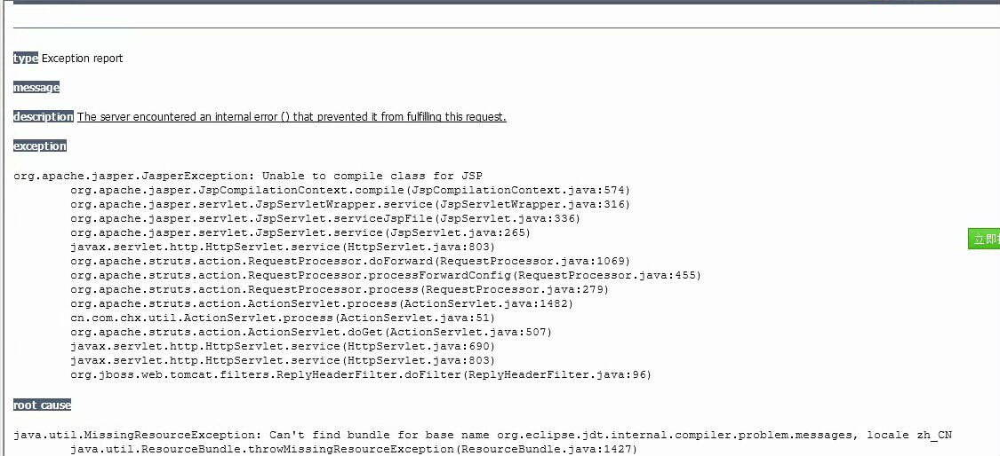
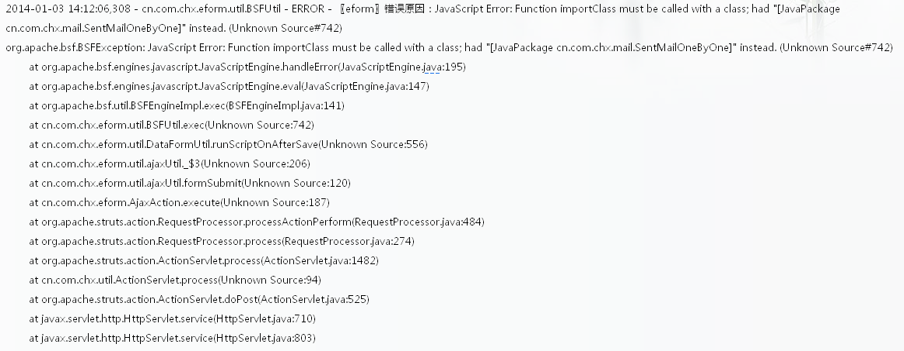
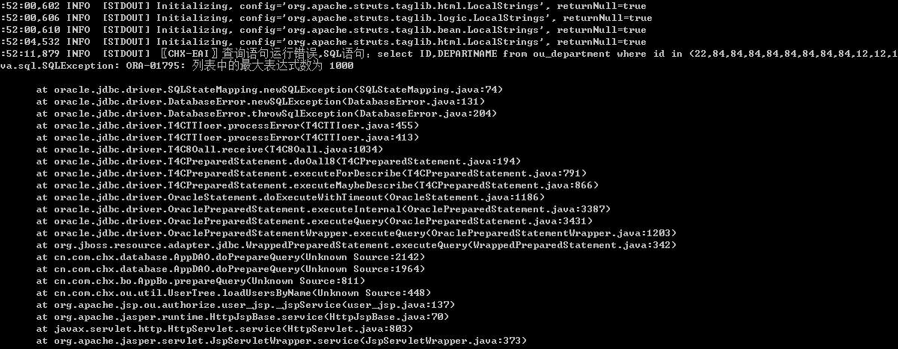

org.apache.jasper.JasperException:Unable to initialize TldLocationsCache:null
环境： 操作系统：linux 中交件：jboss jdk：1.5
解决办法：添加对jdk如下设置1
2CLASSPATH=.:$JAVA_HOME/lib/dt.jar:$JAVA_HOME/lib/tools.jar
PATH=$JAVA_HOME/bin:$PATH
org.apache.jasper.JasperException:Unable to compile class for JSP
异常详细描叙

环境： 操作系统：linux 中交件：jboss jdk：1.5
解决办法：添加对jdk如下设置1
2CLASSPATH=.:$JAVA_HOME/lib/dt.jar:$JAVA_HOME/lib/tools.jar
PATH=$JAVA_HOME/bin:$PATH
附件下载docx、xlsx、pptx 提示无法复制文件：无法读取文件或磁盘
问题详细描述
解决办法：在下载的方法中添加1
2
3
4
5
6
7if(filetype.indexOf(".docx") ==0) {
response.setContentType("application/vnd.openxmlformats-officedocument.wordprocessingml.document");
}elseif(filetype.indexOf(".xlsx") ==0) {
response.setContentType("application/vnd.openxmlformats-officedocument.spreadsheetml.sheet");
}elseif(filetype.indexOf(".pptx") ==0) {
response.setContentType("application/vnd.openxmlformats-officedocument.presentationml.presentation");
}
在web.xml中添加
1
2
3
4
5
6
7
8
9
10
11
12<mime-mapping>
<extension>docx</extension>
<mime-type>application/vnd.openxmlformats-officedocument.wordprocessingml.document</mime-type>
</mime-mapping>
<mime-mapping>
<extension>xlsx</extension>
<mime-type>application/vnd.openxmlformats-officedocument.spreadsheetml.sheet</mime-type>
</mime-mapping>
<mime-mapping>
<extension>pptx</extension>
<mime-type>application/vnd.openxmlformats-officedocument.presentationml.presentation</mime-type>
</mime-mapping>
java.lang.IllegalArgumentException: Illegal group reference
异常详细描叙
1
2
3
42014-05-19 10:11:31,306 ERROR [STDERR] java.lang.IllegalArgumentException: Illegal group reference
2014-05-19 10:11:31,306 ERROR [STDERR] at java.util.regex.Matcher.appendReplacement(Matcher.java:706)
2014-05-19 10:11:31,307 ERROR [STDERR] at java.util.regex.Matcher.replaceAll(Matcher.java:806)
2014-05-19 10:11:31,307 ERROR [STDERR] at java.lang.String.replaceAll(String.java:2000)
异常产生原因： 在使用String的replaceAll方法中因为字符中含有字符 “$”与replaceAll方法中使用的“$”起冲突导致
解决办法： 将字符“$”转义 “\$” 或使用StringUtils的.replaceAll方法
org.apache.bsf.BSFException:javaScript Error:Function importClass must be called with a class:had”[…..]”
详细描述

解决办法： 将jdk1.5换成1.6
java.sql.SQLException:ORA-01795:列表中的最大表达式数为1000
详细描述

异常分析：oracle 查询 in（）查询列表树最大支持1000
解决办法： 使用where col in (1…1000) or col in (1001….)
点击运行jboss run.bat 窗口一闪而过，提示“findstr”不是内部或外部命令
环境：windows2008
解决办法： 在环境变量PATH中添加%SystemRoot%\system32;%SystemRoot%;
通过request.getRemoteAddr() 获取到值为0:0:0:0:0:0:0:1的问题
解决办法：
1、linux
/etc/hosts 注释掉文件中的 # ::1 localhost 这一行
2、windows
C:\Windows\System32\drivers\etc\hosts 注释掉文件中的 # ::1 localhost 这一行